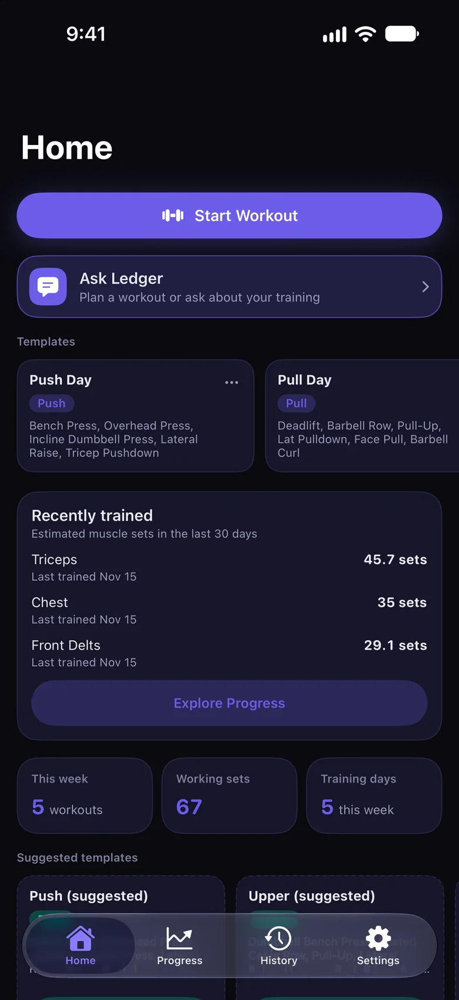
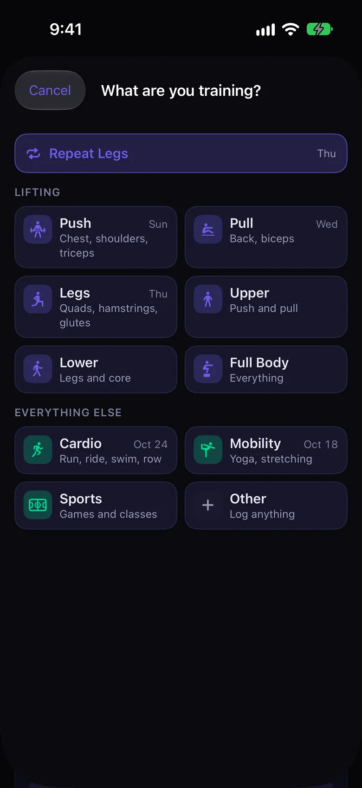
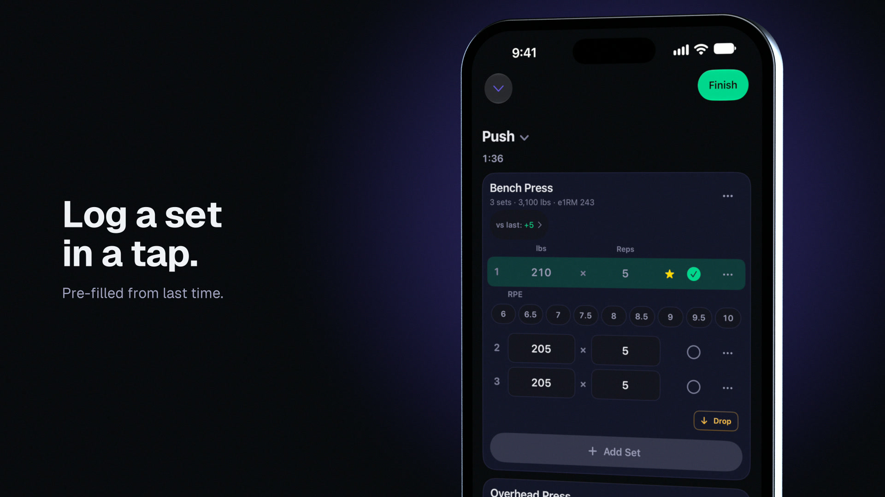
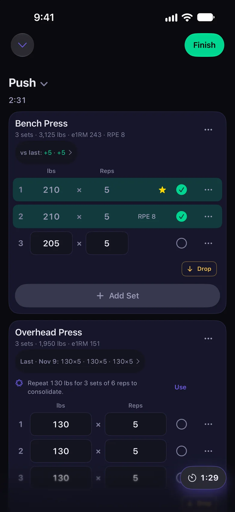
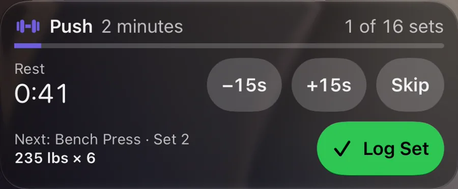
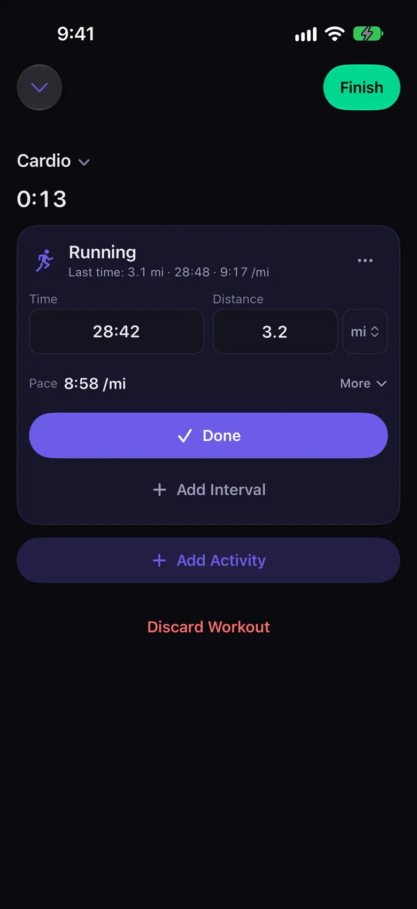
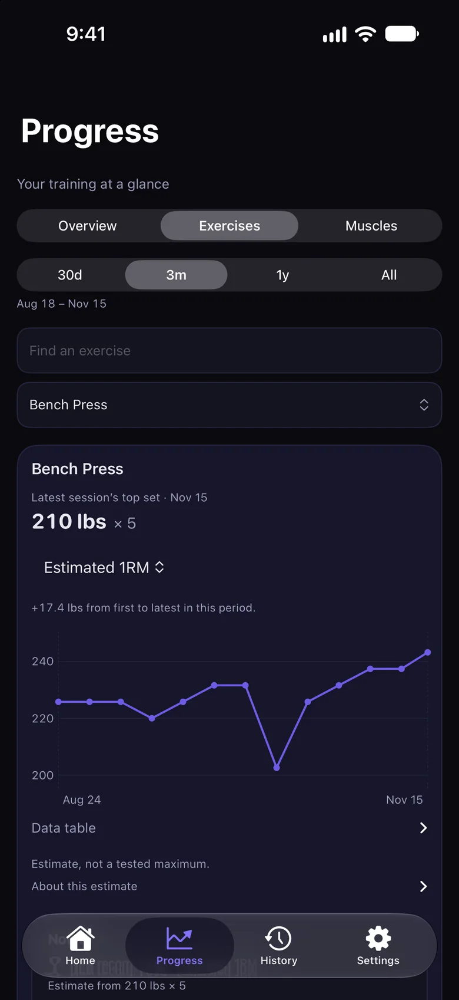
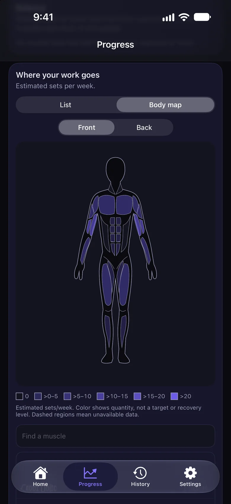
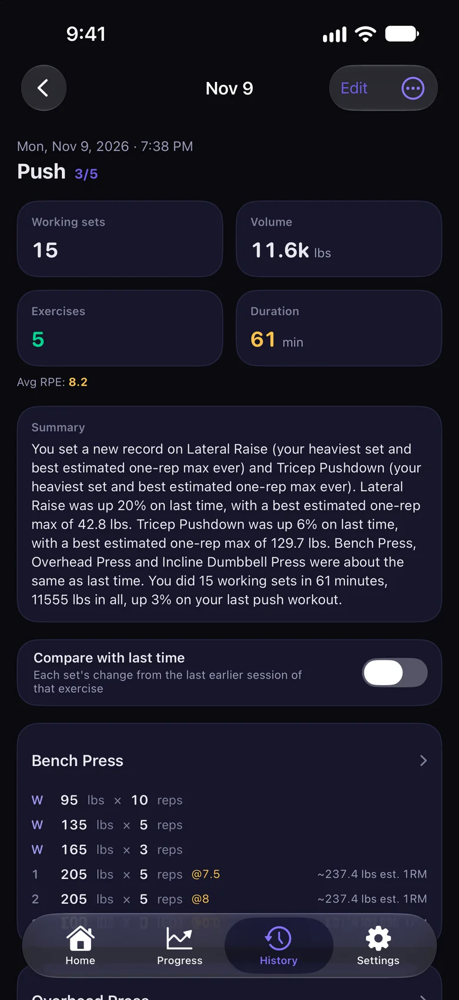
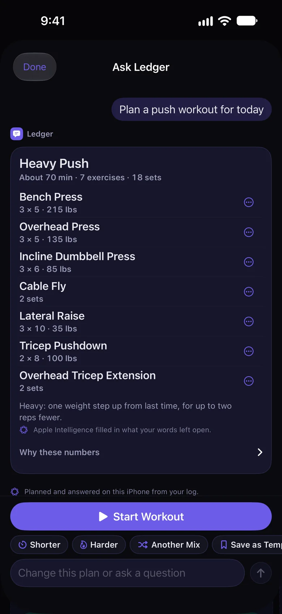

Personal project
Lifting Ledger
A private workout tracker I built for my own training.
Log your lifts, runs, and everything between, then see how it adds up.
Coming to the App Store. Lifting Ledger for iPhone and Apple Watch, shown here, is nearly ready. The release build is in beta on TestFlight now. Not available in Europe.


Why I built it
The tracker I wanted to use.
I wanted a simple, convenient way to track my workouts the way I like to. Building it myself meant I could add whatever features I wanted, and it was a fun thing to work on.

Lifting
Last time’s numbers, ready to beat.
Sets start filled in. A star marks a new best.

While you rest
Your rest, at a glance.
The countdown and the next set, on your Lock Screen.

And everything else
Run. Swim.
Stretch. Play.
Every activity gets its own fields. Log a run and Lifting Ledger works out your pace.

Progress
See where the work goes.



Ask Ledger
One sentence.
One workout.
Say what you have, like 45 minutes and no barbell, and Lifting Ledger plans it from your own log. Or ask about your training. Needs iOS 27. Asking also needs Apple Intelligence.

Also in Lifting Ledger
- Apple WatchLog sets from your wrist, while your iPhone runs the workout. Needs watchOS 27.
- Say a SetSpeak the sets you just did, or log them from a photo, and Lifting Ledger fills them in. Needs iOS 27 and Apple Intelligence.
- Apple HealthSave your workouts and body weight to Health, record your heart rate, and add an estimate of the calories you burned.
- Siri and widgetsLog the next set with Siri, and keep this week on your Home Screen.
- In the gymA plate calculator, warm-ups, drop sets, RPE or RIR, and exercise demonstrations.
- Private by defaultNo account needed. No ads. No tracking. Works offline. Sync is optional.
Lifting Ledger for iPhone, shown with sample data. Lifting Ledger is a training log, not medical advice. iPhone, Apple Watch, watchOS, App Store, and TestFlight are trademarks of Apple Inc., registered in the U.S. and other countries and regions. Apple Intelligence is a trademark of Apple Inc.